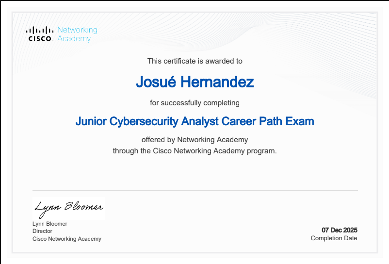
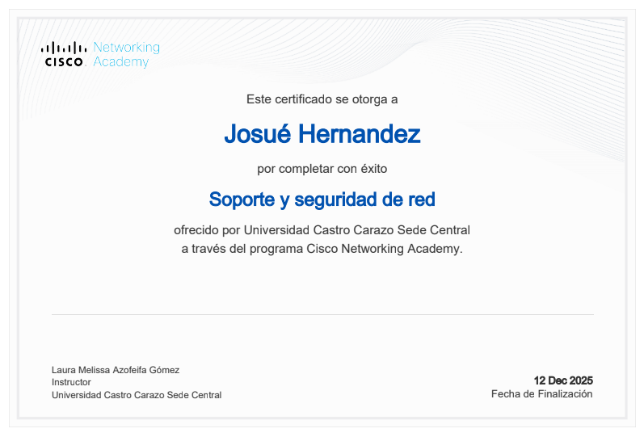
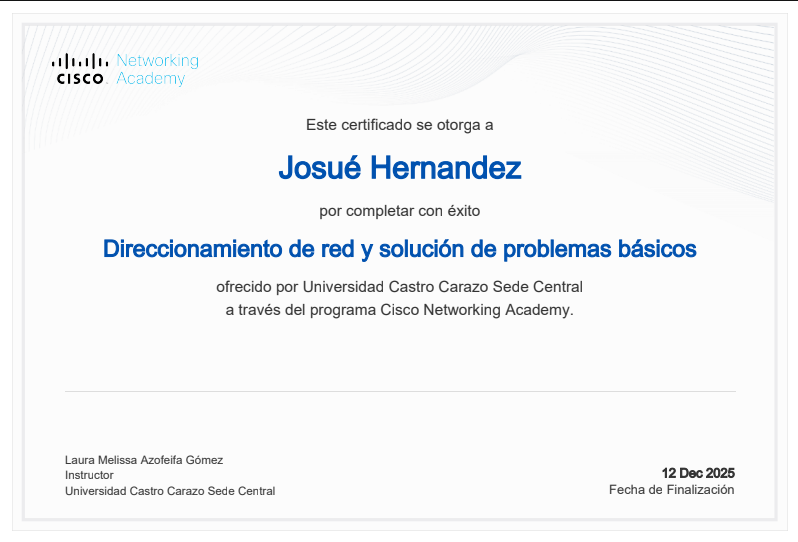
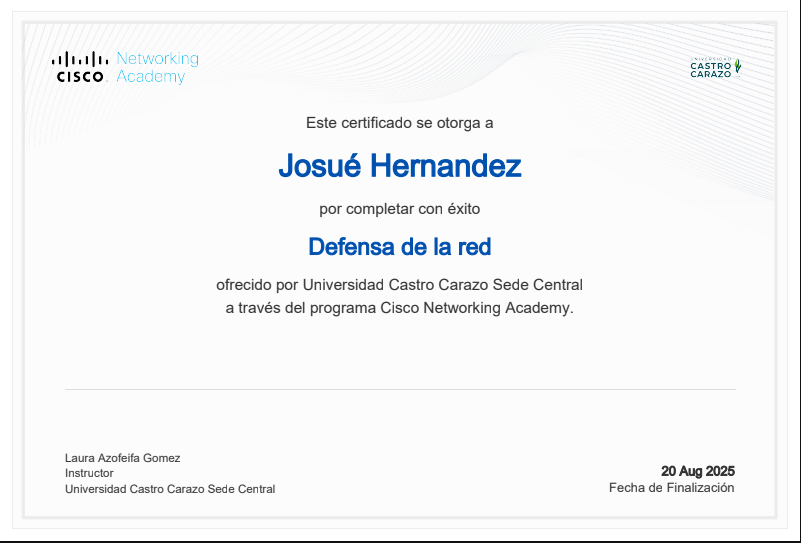
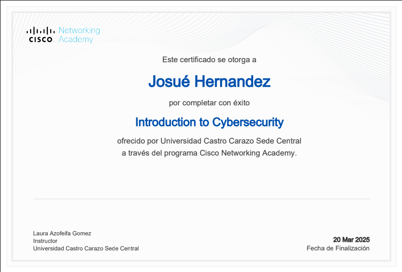
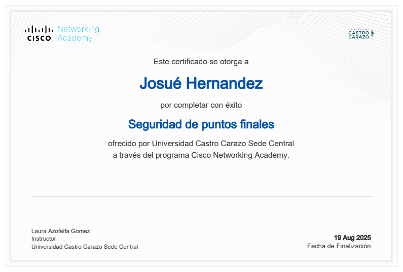
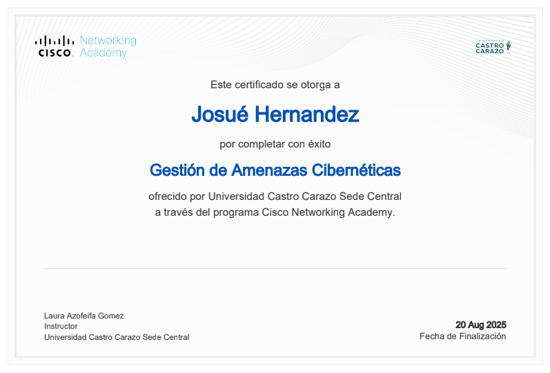
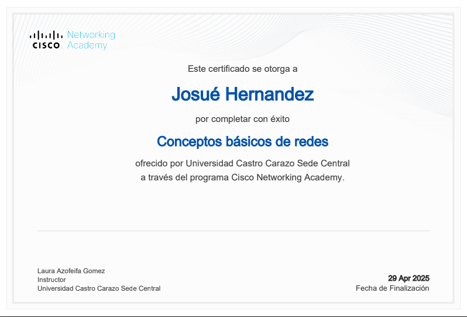
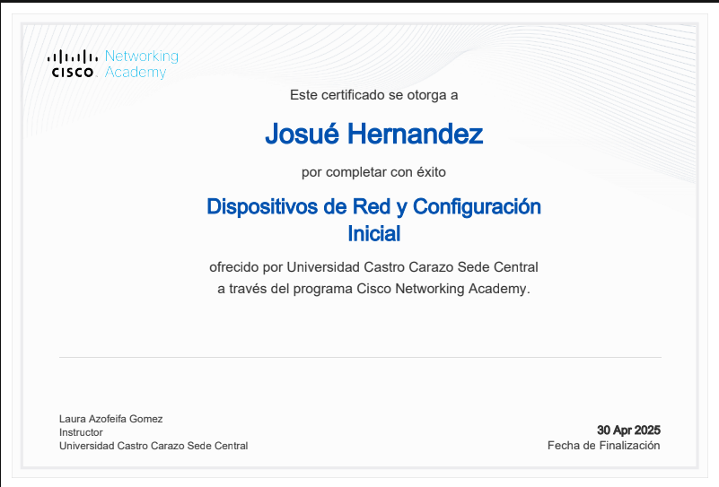

(02) — Certificaciones
Certificaciones
Estas son las certificaciones y cursos que respaldan mi formación en ciberseguridad, redes y desarrollo web.
10
Certificados
Técnico
U. Castro Carazo
SOC
Analyst

02
Junior Cybersecurity Analyst Career Path Exam
Conceptos clave de seguridad, amenazas, riesgos y defensa.
Ver certificado
03
Soporte y seguridad de red
Visión general de amenazas, protección y buenas prácticas.
Ver certificado
04
Direccionamiento de red y solucion de problemas basicos.
Direccionamiento de red y solucion de problemas basicos.
Ver certificado

06
Introduction to cybersecurity
Certificación introductoria en fundamentos de ciberseguridad.
Ver certificado



10
Dispositivos de red y configuración inicial
Configuración básica, acceso y administración inicial.
Ver certificado